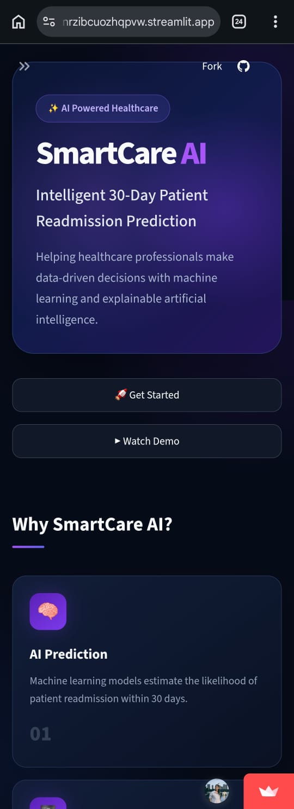
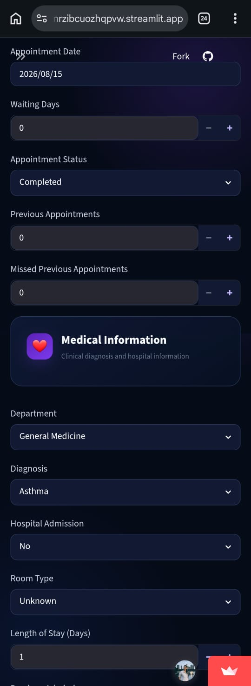
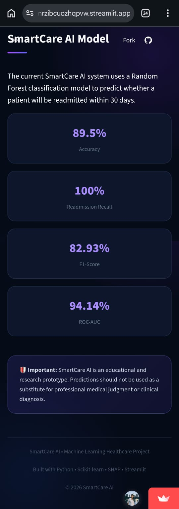
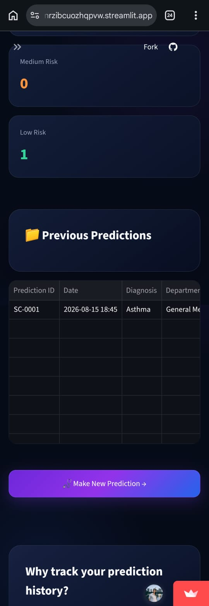
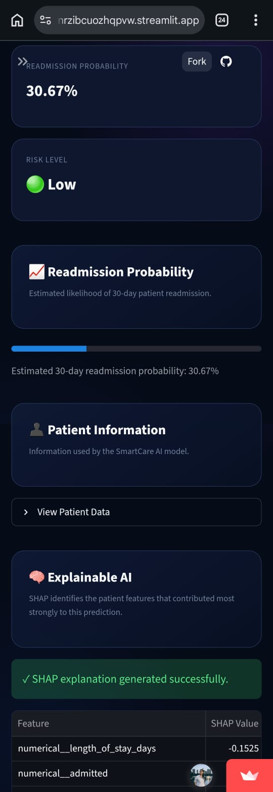
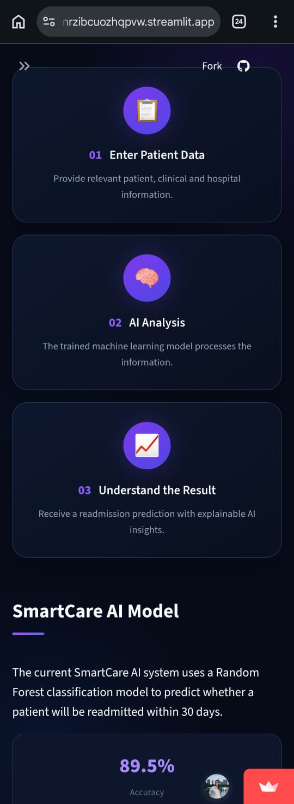
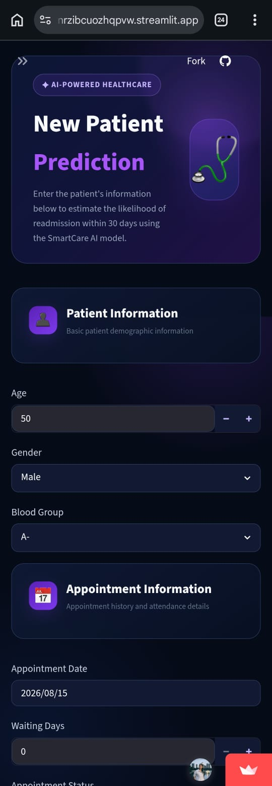
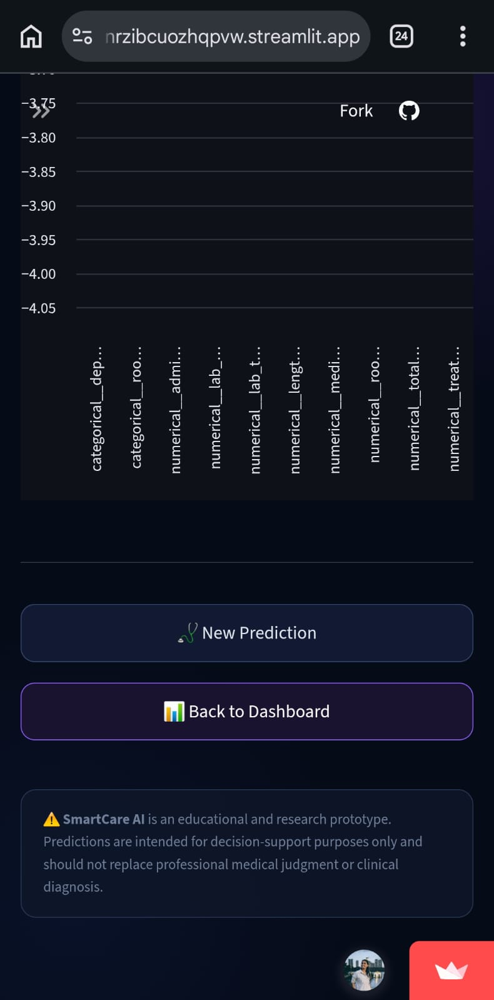
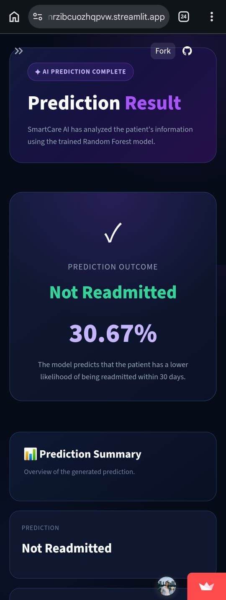
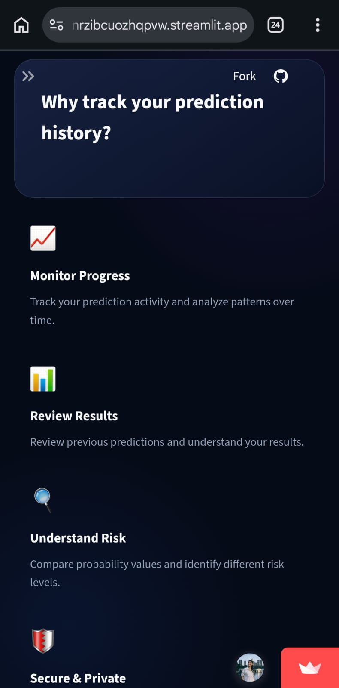

Python
Core programming language for the project.
MY PROJECTS
A little creativity, a lot of curiosity, and some code.
AI · MACHINE LEARNING · HEALTHCARE
Predicting today.
Improving tomorrow.
An AI-based patient readmission prediction system exploring how machine learning and explainable AI can support more informed healthcare decisions.
Machine learning with purpose.
Technology with care
THE IDEA
SmartCare-AI is an AI-based patient readmission prediction project designed to estimate the risk of a patient returning to the hospital within 30 days.
The project explores different machine learning algorithms and incorporates Explainable AI using SHAP to help interpret model predictions. An interactive Streamlit interface brings the system's functionality together in a user-friendly application.
The goal is to explore how AI can make healthcare-related predictions more understandable and accessible.
THE TOOLKIT
Core programming language for the project.
Building and comparing machine learning models.
Interpreting model predictions with explainable AI.
Creating an interactive application interface.
THE EXPERIMENTS
Four machine learning approaches explored for patient readmission prediction.
A classification approach for estimating the likelihood of readmission.
An ensemble learning approach using multiple decision trees.
A classification algorithm that learns decision boundaries between classes.
A gradient-boosting approach for classification tasks.
BEHIND THE SCENES
Prepare patient data for machine learning.
Train the selected classification algorithms.
Compare model performance and explore explanations using SHAP.
Present the application through Streamlit.
WHAT IT OFFERS
Estimates the risk of hospital readmission within a 30-day period.
Explores four machine learning algorithms for the prediction task.
Uses SHAP to help interpret model predictions and feature contributions.
Uses Streamlit to provide a dedicated application interface.
A LITTLE SNEAK PEEK
A closer look at the SmartCare-AI application, prediction interface, explainability, and results.












A PROJECT BUILT WITH PURPOSE
Exploring how machine learning can help make complex predictions easier to understand.
Back to My Portfolio ↗